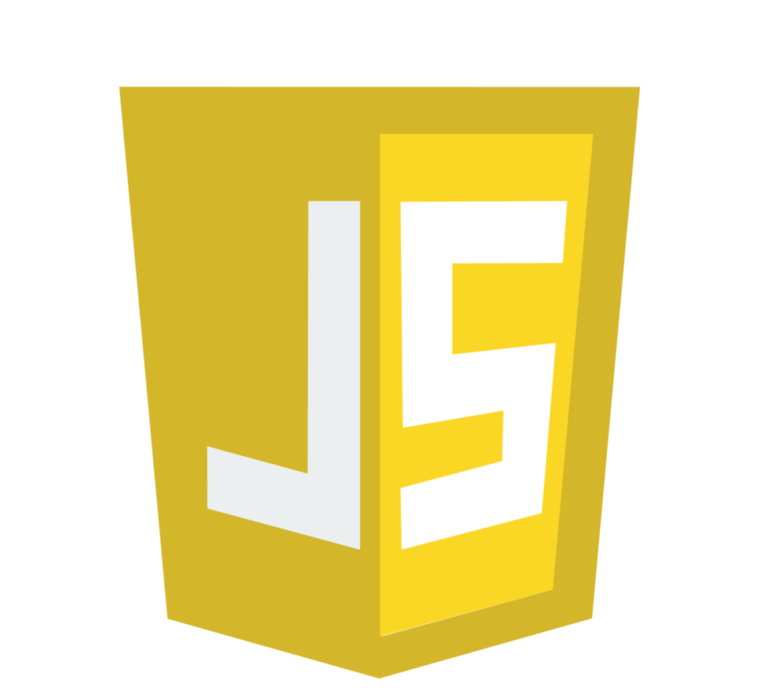
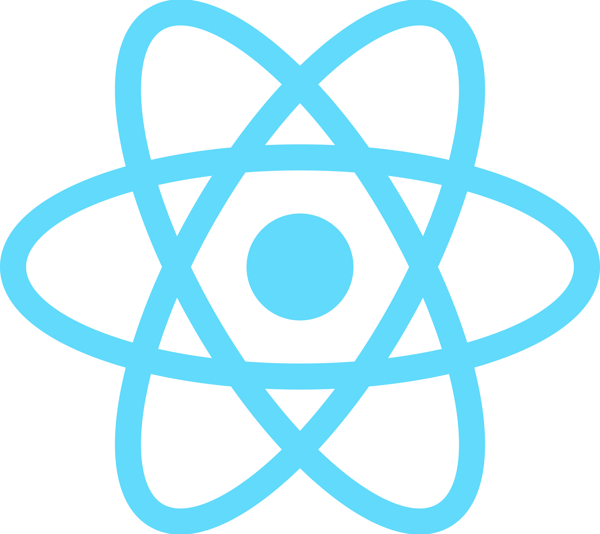
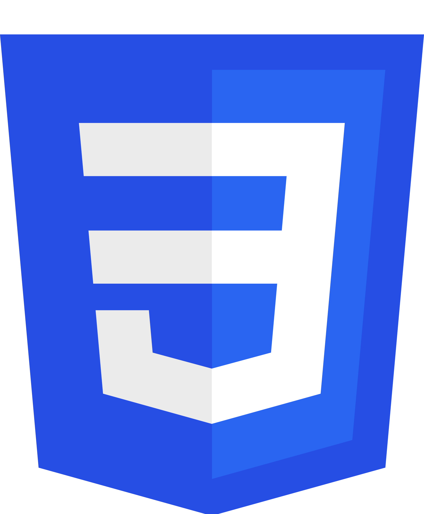
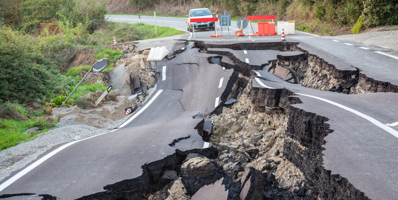
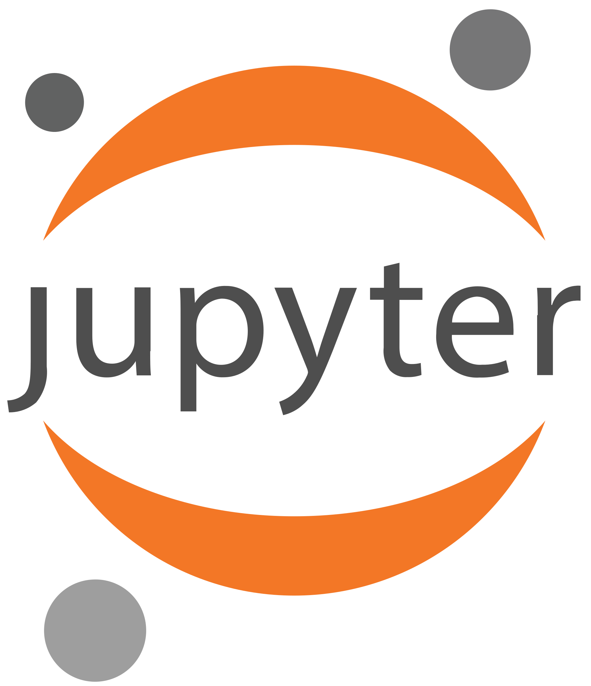
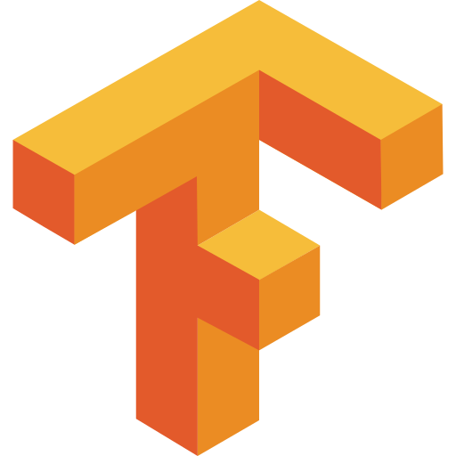
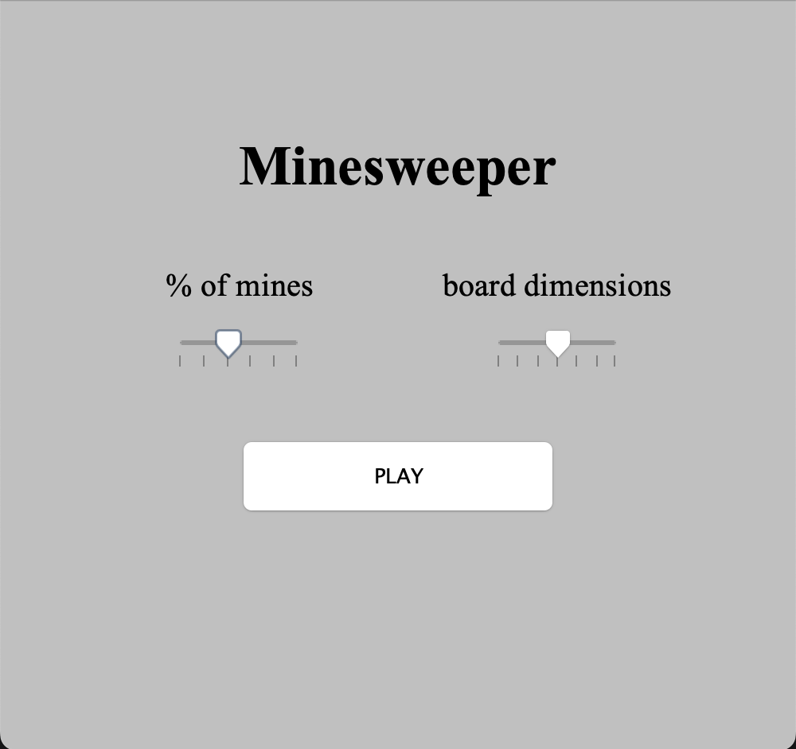
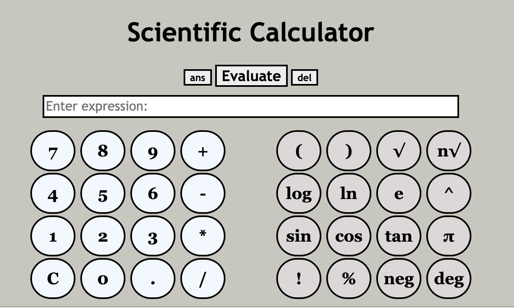

Einstein's Playground
A full-stack undergraduate physics simulator and learner. Integrated with AI to track performance and aid learning at every step of the way. Includes topics from all general physics courses ranging from basic kinematics to circuits and relativity. Also includes miscellaneous topics from other physics courses.



High Energy Particle Simulator
A particle heatmap generator produced to aid NASA's Europa Clipper flagship mission to explore the Jovian moon for traces of life. Simulates the complex trajectories of 27 million particles through a multifarious magnetic field and tracks their landing location. Utilizes parallel processing and C-level compilation to cut down runtime.


QuakeAI
An XGBoost Regressor tree machine learning model that can predict the magnitude and depth of an earthquake with 85% accuracy. The model was based off of a dataset of ~10,000 earthquakes of magnitude >= 5.0 ever since 1980. The model predicts within ±0.5 magnitude and ±100km depth at a high rate.




Miscellaneous Programs
A collection of many different classic programs recreated in my own style. This collection includes a recreation of Tetris (C++), Minesweeper (Java), and a Scientific Calculator (JavaScript) inspired by Desmos that supports nested expressions, multiline operations, and edge-catching/error handling.

